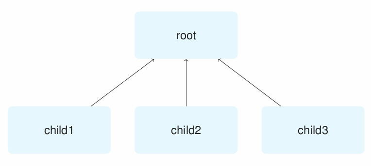
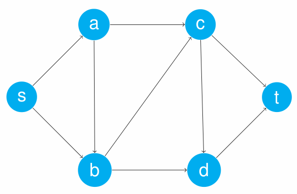
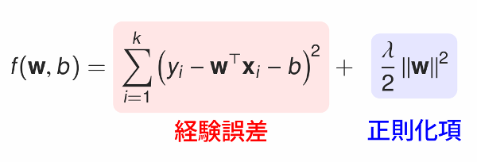
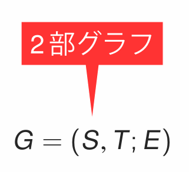

TikZ¶
BeamerのためのTikZ
TikZとは¶
Beamerは便利なのですが，図を描いたり絵を貼るのは苦手なので，どうしても文字を箇条書きしたようなスライドになりがちです． TikZを使うと，模式図やグラフ等を用いた ビジュアル性の高いプレゼンテーション を行うことができます．また，Beamer自体がTikZの機能を利用して作られているので，Beamerとの親和性は最高です．
準備¶
まずは，TikZをプリアンブルでロードします．同時に \usetikzlibrary コマンドで”positioning”ライブラリをロードしておくと便利です．:
\usepackage{tikz}
\usetikzlibrary{positioning}
Note
TikZ/PGF Manualでも暗黙に”positioning”ライブラリがロードされていることがあるので注意！
次に，絵を描きたい部分に tikzpicture 環境を宣言します:
\begin{tikzpicture}
\end{tikzpicture}
あとは中身を埋めていくことになります．
模式図を作る¶
木構造を表す模式図をTikZで作ってみましょう．
テキストボックスを配置する¶
\node コマンドはPowerPointの「テキストボックス」のような使い方ができます．まずは，一番上のテキストを配置してみましょう:
\begin{tikzpicture}
\node{root};
\end{tikzpicture}
注意すべきこととして，TikZでは 行終わりにセミコロンが必要です． C言語でのセミコロンと同じ使い方ですが，よく忘れるので注意しましょう．
次に，ノードに色をつけたり四角形で囲ってみます． \node コマンドにオプションを与えるとスタイルを指定することができます:
\begin{tikzpicture}
\node[rectangle,fill=cyan!10,text width=3cm,text centered,rounded corners,minimum height=1.5cm]{root};
\end{tikzpicture}
オプションの意味としては以下の通りです．
- rectangle
テキストボックスを四角形で囲う
- fill=cyan!10
シアン10% + 白90% の色で内部を塗りつぶす
- text width=3cm
テキストボックスの幅を3cmに設定する
- text centered
テキストボックス内の文字を中央揃えする
- rounded corners
角を丸める
- minimum height=1.5cm
最小の高さを1.5cmにする（1.5cm以上必要なときは自動的に広がる）
これで，いい感じのテキストボックスが出来上がったはずです．
ところで，このスタイルは後で様々なノードに適用するので，いちいち \node のオプションとして書いていては面倒です． \tikzset コマンドを使えばオプションの集合に名前（エイリアス）を付けることが出来，取り回しが楽になります:
\begin{tikzpicture}
\tikzset{block/.style={rectangle, fill=cyan!10, text width=3cm, text centered, rounded corners, minimum height=1.5cm}};
\node[block] {root};
\end{tikzpicture}
ここでは block という名前のオプションセットを定義することで， \node のオプションは block と指定するだけでよくなりました．
Note
\tikzset のかわりに使える \tikzstyle というコマンドがありますが，現在は非推奨となっているようです．TikZ/PGF Manualには今でも \tikzstyle コマンドが載った例がたくさんあるので注意．
子ノードを配置する¶
child 構文を使うと，現在のノードの子ノードを作ることができます:
\begin{tikzpicture}
\tikzset{block/.style={rectangle, fill=cyan!10, text width=3cm, text centered, rounded corners, minimum height=1.5cm}};
\node[block] {root}
child{ node[block] {child1} }
child{ node[block] {child2} }
child{ node[block] {child3} };
\end{tikzpicture}
自動的に子ノードとが配置されたはずです．ただし， block スタイルのためにノードが重なってしまうので， “root” ノードにオプションを書いてノード間の距離などを調整します:
\begin{tikzpicture}
\tikzset{block/.style={rectangle, fill=cyan!10, text width=3cm, text centered, rounded corners, minimum height=1.5cm}};
\node[block] {root} [level distance=3cm, sibling distance=4cm, edge from parent/.style={<-,draw}]
child{ node[block] {child1} }
child{ node[block] {child2} }
child{ node[block] {child3} };
\end{tikzpicture}
各オプションの意味は
- level distance=3cm
親子間の距離を3cmにする
- sibling distance=4cm
兄弟間の距離を4cmにする
- edge from parent/.style={<-,draw}
親から子への辺のスタイルを
<-（終点（子）から始点（親）への矢印）draw（描画する）に設定する
これで模式図が簡単に出来上がりました．なお， child は入れ子にすることもできるので，もっと階層の深い模式図も簡単に作れます:
\begin{tikzpicture}
\tikzset{block/.style={rectangle, fill=cyan!10, text width=3cm, text centered, rounded corners, minimum height=1.5cm}};
\node[block] {root} [level distance=3cm, sibling distance=4cm, edge from parent/.style={<-,draw}]
child{ node[block] {child1} }
child{ node[block]{child2}
child{ node[block]{child2-1} }
}
child{ node[block] {child3} };
\end{tikzpicture}
グラフを作る¶
よくある有向グラフを作ってみましょう．
ノードの配置¶
まずは “s” というラベルのノードを配置してみましょう．これは \node コマンドを使います．文字 “s” だけだとグラフノードっぽくないので，丸で囲って色を塗っておきます．:
\begin{tikzpicture}
\node[circle,fill=cyan,white]{s};
\end{tikzpicture}
それぞれのオプションの意味としては以下の通りです．
- circle
丸で囲う
- fill=cyan
cyan（水色）で内部を塗りつぶす
- white
文字色を白にする
さて，ノードを増やしてみましょう．とはいえ，このまま \node コマンドでノードを増やしても，同じ場所に配置されてしまって意味がありません．そこで，さっきのノードに “s” という名前をつけて，「sの右上」「sの右下」といった形で位置を指定してやることにします:
\begin{tikzpicture}
\node[circle,fill=cyan,white] (s) {s};
\node[above right=of s] (a) {a};
\node[below right=of s] (b) {b};
\end{tikzpicture}
\node コマンドに () で名前を付けています．また， above right=of s などのオプションをつけることで，「sの右上」を実現しています．
さらに残りもやってみましょう:
\begin{tikzpicture}
\node[circle,fill=cyan,white] (s) {s};
\node[above right=of s] (a) {a};
\node[below right=of s] (b) {b};
\node[right=1.5cm of a] (c) {c};
\node[right=1.5cm of b] (d) {d};
\node[below right=of c] (t) {t};
\end{tikzpicture}
right=1.5cm of a で「aの1.5cm右」を指定しています．こんな感じで，ノードを配置することが出来ました．
デフォルトスタイルを指定する¶
さて，ノードを追加したはいいものの，新しいノードはまたしても文字だけです．ここでは 全てのノードに自動で適応されるデフォルトスタイルを指定してみます． そのためには， tikzpicture 環境のオプションに every node/.style={...} の形でデフォルトオプションを指定します:
\begin{tikzpicture}[every node/.style={circle,fill=cyan,white}]
\node (s) {s};
\node[above right=of s] (a) {a};
\node[below right=of s] (b) {b};
\node[right=1.5cm of a] (c) {c};
\node[right=1.5cm of b] (d) {d};
\node[below right=of c] (t) {t};
\end{tikzpicture}
これで， tikzpicture 環境内の全てのノードに同じスタイルが指定されるようになりました．
枝を引く¶
次は枝を引いてみましょう．枝（というかパス）は \draw コマンドで引きます:
\begin{tikzpicture}[every node/.style={circle,fill=cyan,white}]
\node (s) {s};
\node[above right=of s] (a) {a};
\node[below right=of s] (b) {b};
\node[right=1.5cm of a] (c) {c};
\node[right=1.5cm of b] (d) {d};
\node[below right=of c] (t) {t};
\draw[->] (s) -- (a);
\end{tikzpicture}
オプション -> は終点に矢印をおくオプションです．無向枝の場合は要りません． (s) -- (a) でノード “s” からノード “a” へのパスを表しています．
foreach 構文で枝を一気に引く¶
これを全枝分繰り返せばグラフは完成ですが，面倒なのでもっと便利な \foreach 構文を使って枝をひくことにします:
\begin{tikzpicture}[every node/.style={circle,fill=cyan,white}]
\node (s) {s};
\node[above right=of s] (a) {a};
\node[below right=of s] (b) {b};
\node[right=1.5cm of a] (c) {c};
\node[right=1.5cm of b] (d) {d};
\node[below right=of c] (t) {t};
\foreach \u / \v in {s/a,s/b,a/b,a/c,b/c,b/d,c/d,c/t,d/t}
\draw[->] (\u) -- (\v);
\end{tikzpicture}
\foreach 構文はプログラミング言語における for文 のように処理を繰り返すコマンドです．各繰り返しでは2つのループ変数 \u と \v を使っています． \u と \v の動く範囲は in のあとの {s/a,s/b,a/b,a/c,b/c,b/d,c/d,c/t,d/t} で列挙されています．つまり，1回目のループでは \u=s, \v=a であり， 2回目では \u=s, \v=b ，・・・という風に変数 \u と \v の値が変わっていきます．Pythonを知っているならば， for u,v in [(s,a), (s,b), ...] というループと同じだと考えれば分かりやすいでしょう．
さて， \foreach 構文の中には \draw[->] (\u) -- (\v); という処理があります．これは，ループ変数 \u と \v を使っているので，1回目では \draw[->] (s) -- (a); に展開され，2回目では \draw[->] (s) -- (b); というように展開されていきます．これによって，全ての枝を引くことができるというわけです．
数式にマーカーを引く・説明をつける¶
数式の一部分にマーカーを引いて，その下に説明をつけることができます．数式の意味や役割を分かりやすく伝えるのに役に立ちます．
tikzコマンド¶
\tikz コマンドを利用すると文中にTikZの描画を入れることが出来ます．これを利用して，以下のように書いてみます（いきなり全部書くのは大変なので，第2項だけ書きます）:
\begin{align*}
f(\mathbf{w}, b) =
\tikz[baseline=(x.base)]{
\node(x)[rectangle, fill=blue!10, rounded corners]{$\displaystyle \frac{\lambda}{2} \|\mathbf{w} \|^2$} node[blue, below of = x]{正則化項};}
}
\end{align*}
オプションの意味としては以下の通りです．
- baseline=(x.base)
\tikzコマンドの描画の基準線をノードxのアンカー位置（中心）に合わせます．これをやらないと，項が微妙にずれて表示されてしまいます．- rectangle
ノードを四角形で囲う
- rounded corners
rectangleで指定された四角形の角を丸くする
中の blue を red に変えれば，もちろん色が赤くなります．
highlight マクロ¶
これを毎回書くのは大変なので， \newcommand を使ってマクロを作りましょう:
\newcommand{\highlight}[2][yellow]{\tikz[baseline=(x.base)]{\node[rectangle,rounded corners,fill=#1!10](x){#2};}}
\newcommand{\highlightcap}[3][yellow]{\tikz[baseline=(x.base)]{\node[rectangle,rounded corners,fill=#1!10](x){#2} node[below of=x, color=#1]{#3};}}
\highlight はマーカーを引くだけ， highlightcap はマーカー＋キャプションをつけるコマンドです．上の画像の数式は以下のようになります:
\begin{align*}
f(\mathbf{w}, b) =
\highlightcap[red]{$\displaystyle \sum_{i=1}^k \left(y_i - \mathbf{w}^\top \mathbf{x}_i - b \right)^2$}{経験誤差}
+
\highlightcap[blue]{$\displaystyle \frac{\lambda}{2} \left\|\mathbf{w} \right\|^2$}{正則化項}
\end{align*}
上の例から明らかですが， \highlightcap[色]{数式}{キャプション} という使い方です． 色 は省略すると自動で yellow になります．
また， 数式 の部分は $...$ で囲う必要があります．
\highlight はただ単に {キャプション} の部分を書かないだけで，ほとんど同じです．
ふきだしを作る¶
Beamerのプレゼンに便利なふきだしを作ってみましょう．
remember picture¶
以下では remember picute と呼ばれる tikzpicture 環境間でノードの名前を共有する機能を使用します．pdftexやluatexを使っている場合は何もしなくても大丈夫ですが，(u)platex+dvipdfmxを使っている場合はpxpgfmarkパッケージを読み込む必要があります:
\usepackage{pxpgfmark} % TikZを読み込む後に書く
shapesライブラリ¶
吹き出しの形を使うためにshapesライブラリを利用します:
\usetikzlibrary{shapes.callouts}
まずは，吹き出しの根本となる部分をtikzノードにします:
\tikz[remember picture]{\node (bgraph){$G = (S,T;E)$};}
後で参照するため，nodeには必ず名前をつけておきます．
文中の文字など，baselineからズレるのが嫌な場合は， baseline=(bgraph.base) を \tikz のオプションに追加します．
次に，吹き出し本体のノードを作ります:
\begin{tikzpicture}[remember picture, overlay]
\node[rectangle callout, fill=red!80, white, callout absolute pointer={(bgraph.north)}, above=of bgraph]{2部グラフ}; %
\end{tikzpicture}
オプションの意味としては以下の通りです．
- overlay
これをつけると，
tikz環境が他の要素の上に重なって表示されます．- rectangle callout
四角形の吹き出し
- callout absolute pointer
吹き出しの指す先の座標を指定します．上の例では
(bgraph.north)(bgraphノードの上端) を指定しています．- above=of bgraph
吹き出しの本体が
bgraphノードの上に配置されます．
callout absolute pointer や above=... を変更することで細かい調整が出来ます．
詳細な調整の仕方はTikZマニュアルのPositioningやCoordinate Systemの章を参照して下さい．
Tikzの基礎¶
もっと色んな絵を描いてみたい人向けの解説です．
座標¶
位置指定で最も基本的なのは座標による方法です．おなじみの2次元直交座標を使うと，原点は (0,0) のように表せます．ちょっと面白いのが極座標表示です． 例えば，r=1, θ=30° で定まる点は (30:1) のように表せます．円や回転対称な図を描く場合には極座標表示の方が楽です．
さらに，ノードの名前を使って間接的に座標指定することもできます．
パス¶
TikZの基本となる概念が パス です．だいたい曲線や直線のようなものだと思ってもらえればOKです．ただし，TikZでのパスは線をひくためだけのものではありません．例えば，閉じたパスを使って，パスの内部を塗り潰したり，別の図形を切り取ったりもできます．このようなパスの使い方は，PhotoshopやIllustratorを使ったことがある人なら馴染みのあるものでしょう．
パスを定義するには \path コマンドを使います．原点から点(0,1)まで線分からなるパスは以下のように書けます:
\path (0,0) -- (0,1);
これを伸ばせば折れ線パスも定義できます:
\path (0,0) -- (0,1) -- (1,1);
パスは途中で途切れていても構いません．以下の例は，2本の線分からなるパスです:
\path (0,0) -- (0,1) (2,2) -- (1,3);
パスを定義しても，明示的に描画されない限り表示されません．パスを描画するには draw オプションを使います:
\path[draw] (0,0) -- (0,1) (2,2) -- (1,3);
\path[draw] の短縮形である \draw コマンドでも同じことができます:
\draw (0,0) -- (0,1) (2,2) -- (1,3);
さらに様々なオプションを付けることで描画スタイルを設定できます．たとえば，太さを2ptにし，線の色を赤，最後を矢印で終わらせるには:
\draw[->,red,line width=2pt] (0,0) -- (0,1) (2,2) -- (1,3);
詳しいオプションは TikZ/PGF マニュアルを読んで下さい．
ノード¶
ノードは，PowerPointで言うところの「テキストボックス」や「図形」のような役割をします．文字や図形を配置することができます．ノードは \node コマンドで定義します:
\node at (座標) {ノードの中身の文章} (ノードの名前);
例えば，座標 (0,0) に “leaf” と書いた v0 というノードを作るには:
\node at (0,0) {leaf} (v0);
となります．座標を省略すると自動的に原点に置かれます．
パス中にノードを配置する¶
\path コマンドの途中でノードを作ることもできます．実際， \node コマンドは \path node の省略形です:
\path[->,draw] (0,0) -- node[above]{my path} (3,0);
上の例では， (0,0) から (3,0) へのパスの途中に “my path” という文字を持ったノードを配置しています．通常はパスの中点に置かれますが， above オプションがあるため中点よりすこし上に配置されます．これによって，線の上に文字を配置することができます．
なお，斜めの線や曲線にそってラベルを配置したい場合は sloped オプションを使います．下の例では，斜め45°のパスに沿って向かって左側に “my path” というラベルが配置されます:
\path[draw] (0,0) -- node[sloped, left]{my path} (3,3);